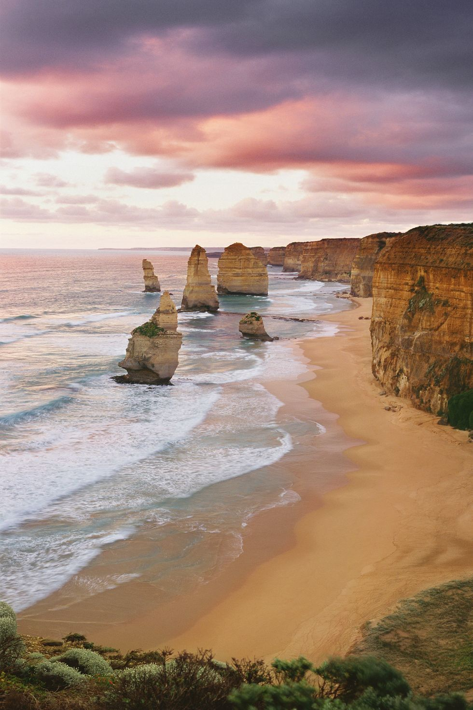

|
PARIS:
is a beautiful place you must watch it altest one time in your life time.
Paris is also the center of French economy, politics, traffic and culture. Paris has many art museums and historical buildings. As a traffic center, Paris has a very good underground subway system (called the Metro). It also has two airports. The Metro was built in 1900, and its total length is more than 200 km (120 mi).
The city has a multi-cultural style, because 20% of the people there are from outside France.[source?] There are many different restaurants with all kinds of food. Paris also has some types of pollution like air pollution and light pollution.
|
|  |
GRAND LAKE:
is a beautiful place you must watch it altest one time in your life time.
Grand Lake is Colorado's largest and deepest natural lake.[4] It is located in the headwaters of the Colorado River in Grand County, Colorado. On its north shore is located the historic and eponymous town of Grand Lake. The lake was formed during the Pinedale glaciation, which occurred from 30000 BP (before present) to 10000 BP.[5] The glacial terminal moraine created a natural dam.
Natural tributaries to the lake are the North Inlet and East Inlet, both of which flow out of Rocky Mountain National Park, whichsurrounds the lake on three sides. Grand Lake is located 1 mile from the Park's western entrance. Grand Lake was named Spirit Lake by the Ute Tribe because they believed the lake's cold waters to be the dwelling place of departed souls. |